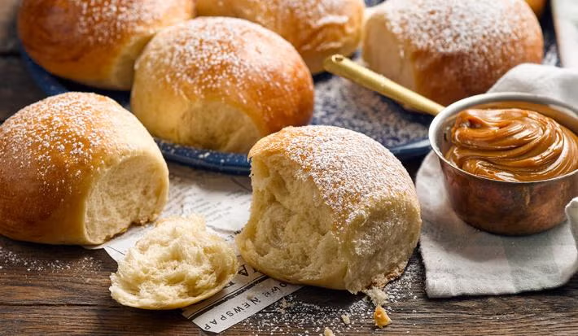
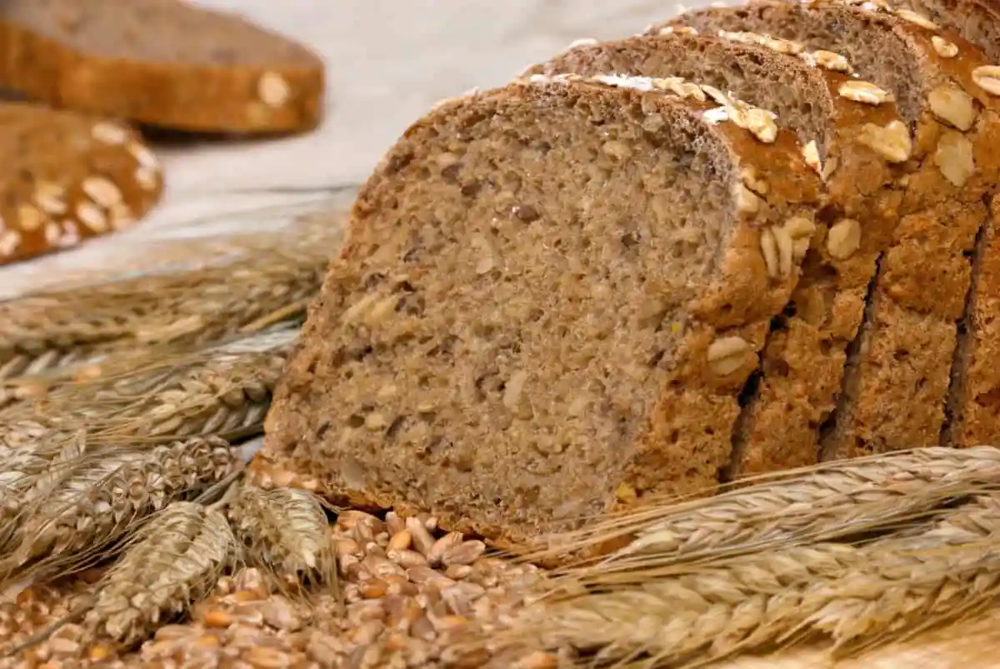

Recetas de Pan
Pan Dulce

Ingredientes
| Ingrediente | Cantidad |
|---|
| Harina de trigo | 300g |
| Levadura seca | 10g |
| Leche tibia | 200ml |
| Azúcar | 50g |
| Mantequilla | 50g |
| Huevo | 1 unidad |
| Sal | 1 pizca |
Preparación
- Disolver la levadura en la leche tibia con una cucharada de azúcar y dejar reposar 10 minutos.
- Mezclar la harina con el azúcar restante y la sal.
- Agregar la mezcla de levadura, el huevo y la mantequilla derretida.
- Amasar hasta obtener una masa homogénea y dejar reposar por 1 hora.
- Formar bollos y colocarlos en una bandeja.
- Hornear a 180°C por 20 minutos.
- Dejar enfriar antes de servir.
Pan de Ajo

Ingredientes
| Ingrediente | Cantidad |
|---|
| Pan baguette | 1 unidad |
| Mantequilla | 100g |
| Ajo | 2 dientes |
| Perejil | Al gusto |
| Sal | Al gusto |
Preparación
- Mezclar la mantequilla con el ajo picado y el perejil.
- Cortar la baguette en rebanadas y untar con la mezcla de mantequilla.
- Hornear a 180°C por 10 minutos.
- Servir caliente.
Pan Integral

Ingredientes
| Ingrediente | Cantidad |
|---|
| Harina integral | 300g |
| Levadura | 10g |
| Agua tibia | 200ml |
| Sal | 1 cucharadita |
| Azúcar | 1 cucharada |
Preparación
- Disolver la levadura y el azúcar en el agua tibia y dejar reposar 10 minutos.
- Mezclar con la harina y la sal hasta formar una masa homogénea.
- Dejar reposar la masa por 1 hora hasta que duplique su tamaño.
- Amasar nuevamente y formar un pan.
- Hornear a 180°C por 35 minutos.
- Dejar enfriar antes de cortar y servir.